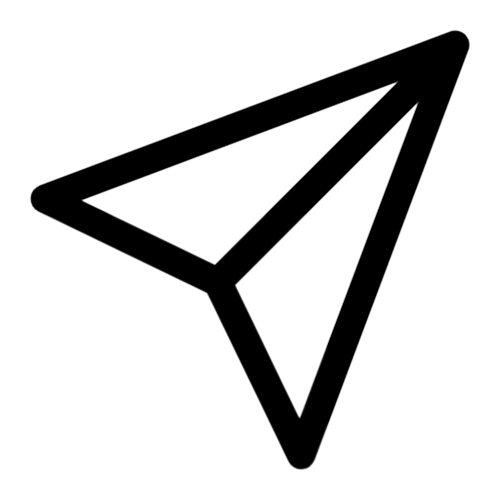

<ion-header [translucent]="true">
  <ion-toolbar>
    <ion-title class="ion-text-center"> Consulta Mozo</ion-title>
  </ion-toolbar>
</ion-header>

<ion-content *ngIf="perfilUsuarioActual &&  perfilUsuarioActual.toLowerCase() ==='mozo'" class="chat-background">

  <div *ngIf="!mostrarChat && mesasVigentes">
    <h1 class="ion-text-center">Mesas con clientes:</h1><br>
    <ion-card *ngFor="let item of mesasVigentes" class="ion-text-center">
      <br>
      <ion-card-title>Numero de Mesa: {{item.numeroMesa}}</ion-card-title>
      <ion-button style="margin-top: 9px;" color="secondary"  (click)="vincularChatConConsultaDelUsuario(item)" >Ver Chat</ion-button>
      <br><br>
    </ion-card>
  </div>


  <br>
  <div class="message-list" #contenedorDeMensajes *ngIf="mostrarChat">
    <div *ngFor="let mensaje of consultasDelUsuario" class="msj">
      <div class="contenedor-mensaje"
           [ngClass]="{
             'usuario-actual': esUsuarioLogeado(mensaje.emisorUid),
             'usuario-ajeno': !esUsuarioLogeado(mensaje.emisorUid)
           }">

           <span style="font-size: small;">{{ formatTimestamp(mensaje.timestamp) }}</span>
           <p style="font-weight: 600;color:black;">{{ mensaje.texto }}</p>
      </div>
    </div>
  </div>
</ion-content>

<ion-content *ngIf="perfilUsuarioActual.toLowerCase() ==='cliente'" class="chat-background"  >
  <br>
  <div class="message-list" #contenedorDeMensajes *ngIf="consultasDelUsuario!== 'undefined' || consultasDelUsuario.length>0" >
    <div *ngFor="let mensaje of consultasDelUsuario" class="msj">
      <div class="contenedor-mensaje"
           [ngClass]="{
             'usuario-actual': esUsuarioLogeado(mensaje.emisorUid),
             'usuario-ajeno': !esUsuarioLogeado(mensaje.emisorUid)
           }">

           <span style="font-size: small;">{{ formatTimestamp(mensaje.timestamp) }}</span>
           <p style="font-weight: 600;">{{ mensaje.texto }}</p>
      </div>
    </div>
  </div>
</ion-content>


<ion-footer style="height: 10vh;" *ngIf="mostrarChat">
  <ion-toolbar>
    <ion-item lines="none">
      <ion-input style="width: 65vw; margin-top: 10px;" fill="solid" [(ngModel)]="nuevoMensaje" placeholder=" Escribe tu mensaje "></ion-input>
      <ion-button color="light" (click)="enviarMensaje()" slot="end" color="secondary">
        
      </ion-button>
    </ion-item>
  </ion-toolbar>
</ion-footer>
